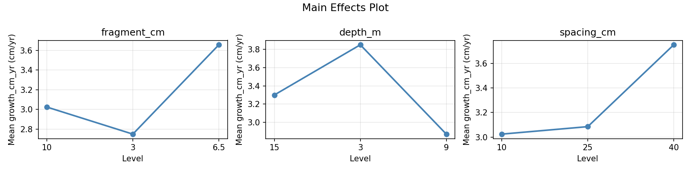
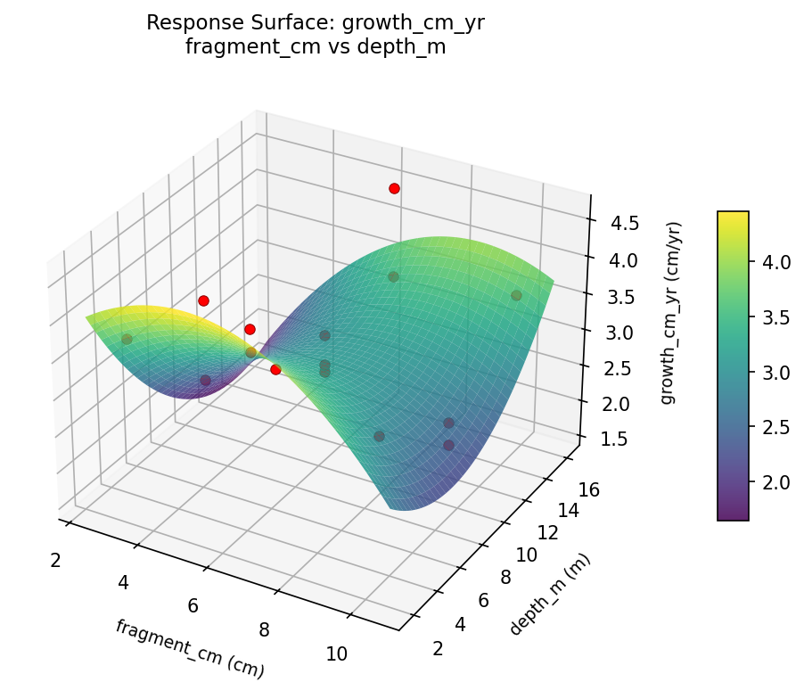
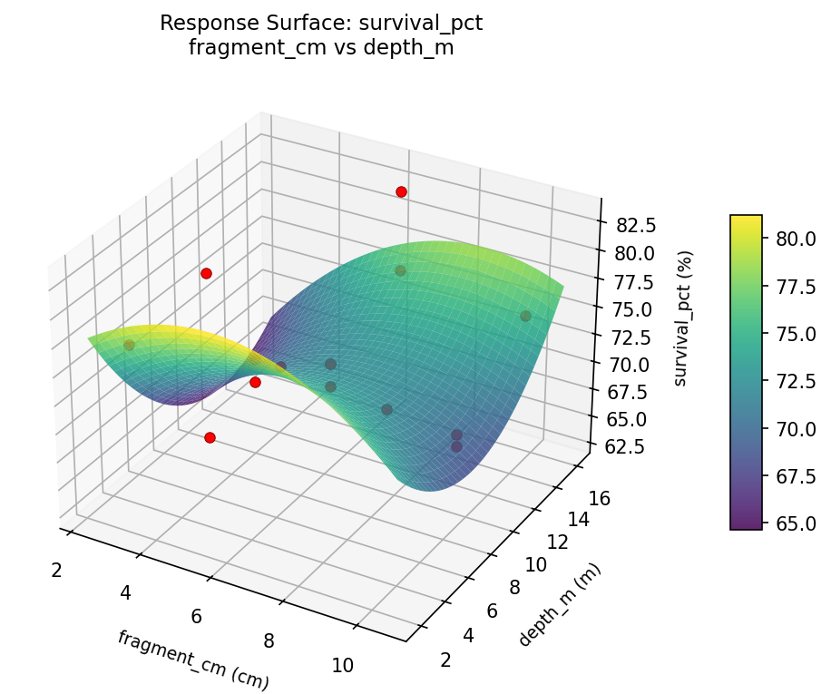
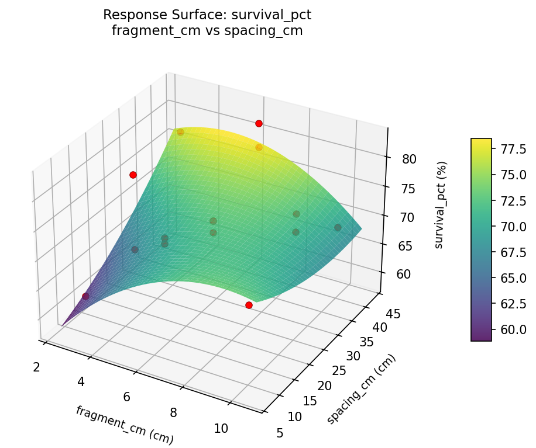

Summary
This experiment investigates coral reef fragment restoration. Box-Behnken design to maximize coral growth rate and survival by tuning fragment size, depth placement, and spacing.
The design varies 3 factors: fragment cm (cm), ranging from 3 to 10, depth m (m), ranging from 3 to 15, and spacing cm (cm), ranging from 10 to 40. The goal is to optimize 2 responses: growth cm yr (cm/yr) (maximize) and survival pct (%) (maximize). Fixed conditions held constant across all runs include species = acropora, substrate = ceramic_disc.
A Box-Behnken design was chosen because it efficiently fits quadratic models with 3 continuous factors while avoiding extreme corner combinations — requiring only 15 runs instead of the 8 needed for a full factorial at two levels.
Quadratic response surface models were fitted to capture potential curvature and factor interactions. The RSM contour plots below visualize how pairs of factors jointly affect each response.
Key Findings
For growth cm yr, the most influential factors were depth m (37.5%), fragment cm (34.7%), spacing cm (27.8%). The best observed value was 4.6 (at fragment cm = 10, depth m = 9, spacing cm = 10).
For survival pct, the most influential factors were depth m (37.5%), spacing cm (31.9%), fragment cm (30.6%). The best observed value was 83.0 (at fragment cm = 10, depth m = 9, spacing cm = 10).
Recommended Next Steps
- Run confirmation experiments at the predicted optimal settings to validate the model.
- Consider whether any fixed factors should be varied in a future study.
Experimental Setup
Factors
| Factor | Low | High | Unit |
|---|
fragment_cm | 3 | 10 | cm |
depth_m | 3 | 15 | m |
spacing_cm | 10 | 40 | cm |
Fixed: species = acropora, substrate = ceramic_disc
Responses
| Response | Direction | Unit |
|---|
growth_cm_yr | ↑ maximize | cm/yr |
survival_pct | ↑ maximize | % |
Configuration
{
"metadata": {
"name": "Coral Reef Fragment Restoration",
"description": "Box-Behnken design to maximize coral growth rate and survival by tuning fragment size, depth placement, and spacing"
},
"factors": [
{
"name": "fragment_cm",
"levels": [
"3",
"10"
],
"type": "continuous",
"unit": "cm"
},
{
"name": "depth_m",
"levels": [
"3",
"15"
],
"type": "continuous",
"unit": "m"
},
{
"name": "spacing_cm",
"levels": [
"10",
"40"
],
"type": "continuous",
"unit": "cm"
}
],
"fixed_factors": {
"species": "acropora",
"substrate": "ceramic_disc"
},
"responses": [
{
"name": "growth_cm_yr",
"optimize": "maximize",
"unit": "cm/yr"
},
{
"name": "survival_pct",
"optimize": "maximize",
"unit": "%"
}
],
"settings": {
"operation": "box_behnken",
"test_script": "use_cases/251_coral_reef_restoration/sim.sh"
}
}
Experimental Matrix
The Box-Behnken Design produces 15 runs. Each row is one experiment with specific factor settings.
| Run | fragment_cm | depth_m | spacing_cm |
|---|
| 1 | 6.5 | 3 | 10 |
| 2 | 6.5 | 9 | 25 |
| 3 | 10 | 9 | 40 |
| 4 | 10 | 9 | 10 |
| 5 | 6.5 | 9 | 25 |
| 6 | 6.5 | 9 | 25 |
| 7 | 3 | 9 | 40 |
| 8 | 10 | 3 | 25 |
| 9 | 6.5 | 3 | 40 |
| 10 | 10 | 15 | 25 |
| 11 | 3 | 9 | 10 |
| 12 | 6.5 | 15 | 40 |
| 13 | 3 | 3 | 25 |
| 14 | 3 | 15 | 25 |
| 15 | 6.5 | 15 | 10 |
Step-by-Step Workflow
1
Preview the design
$ python doe.py info --config use_cases/251_coral_reef_restoration/config.json
2
Generate the runner script
$ python doe.py generate --config use_cases/251_coral_reef_restoration/config.json \
--output use_cases/251_coral_reef_restoration/results/run.sh --seed 42
3
Execute the experiments
$ bash use_cases/251_coral_reef_restoration/results/run.sh
4
Analyze results
$ python doe.py analyze --config use_cases/251_coral_reef_restoration/config.json
5
Get optimization recommendations
$ python doe.py optimize --config use_cases/251_coral_reef_restoration/config.json
6
Generate the HTML report
$ python doe.py report --config use_cases/251_coral_reef_restoration/config.json \
--output use_cases/251_coral_reef_restoration/results/report.html
Real-World Experiment Workflow
ℹ
Physical Marine & Environmental Test? Use the Manual Workflow
Marine experiments involve real water conditions, living organisms, and environmental factors that require field testing. The simulation script above is for demonstration. For your real experiments, use record, status, and export-worksheet.
$ python doe.py export-worksheet --config use_cases/251_coral_reef_restoration/config.json \
--format csv --output worksheet.csv
$ python doe.py status --config use_cases/251_coral_reef_restoration/config.json
$ python doe.py record --config use_cases/251_coral_reef_restoration/config.json --run 1
$ python doe.py analyze --config use_cases/251_coral_reef_restoration/config.json --partial
$ python doe.py analyze --config use_cases/251_coral_reef_restoration/config.json
$ python doe.py optimize --config use_cases/251_coral_reef_restoration/config.json
$ python doe.py report --config use_cases/251_coral_reef_restoration/config.json \
--output report.html
✔
Works Without a Test Script
The analysis pipeline doesn't care how results were produced. Record your measurements with record, and the full analysis, optimization, and reporting pipeline works identically. Use --partial to get early insights before all runs are complete.
Features Exercised
| Feature | Value |
|---|
| Design type | box_behnken |
| Factor types | continuous (all 3) |
| Arg style | double-dash |
| Responses | 2 (growth_cm_yr ↑, survival_pct ↑) |
| Total runs | 15 |
Analysis Results
Generated from actual experiment runs using the DOE Helper Tool.
Response: growth_cm_yr
Top factors: depth_m (37.5%), fragment_cm (34.7%), spacing_cm (27.8%).
Pareto Chart

Main Effects Plot

Response: survival_pct
Top factors: depth_m (37.5%), spacing_cm (31.9%), fragment_cm (30.6%).
Pareto Chart

Main Effects Plot

Response Surface Plots
3D surfaces fitted with quadratic RSM. Red dots are observed data points.
growth cm yr depth m vs spacing cm

growth cm yr fragment cm vs depth m

growth cm yr fragment cm vs spacing cm

survival pct depth m vs spacing cm

survival pct fragment cm vs depth m

survival pct fragment cm vs spacing cm

Full Analysis Output
RSM surface: rsm_growth_cm_yr_fragment_cm_vs_depth_m.png
RSM surface: rsm_growth_cm_yr_fragment_cm_vs_spacing_cm.png
RSM surface: rsm_growth_cm_yr_depth_m_vs_spacing_cm.png
RSM surface: rsm_survival_pct_fragment_cm_vs_depth_m.png
RSM surface: rsm_survival_pct_fragment_cm_vs_spacing_cm.png
RSM surface: rsm_survival_pct_depth_m_vs_spacing_cm.png
=== Main Effects: growth_cm_yr ===
Factor Effect Std Error % Contribution
--------------------------------------------------------------
depth_m 0.9786 0.2040 37.5%
fragment_cm 0.9071 0.2040 34.7%
spacing_cm 0.7250 0.2040 27.8%
=== Summary Statistics: growth_cm_yr ===
fragment_cm:
Level N Mean Std Min Max
------------------------------------------------------------
10 4 3.0250 0.5679 2.4000 3.6000
3 4 2.7500 0.9747 1.6000 3.7000
6.5 7 3.6571 0.6528 2.9000 4.6000
depth_m:
Level N Mean Std Min Max
------------------------------------------------------------
15 4 3.3000 1.2490 1.6000 4.6000
3 4 3.8500 0.3873 3.4000 4.3000
9 7 2.8714 0.4386 2.3000 3.4000
spacing_cm:
Level N Mean Std Min Max
------------------------------------------------------------
10 4 3.0250 0.8180 2.3000 4.0000
25 7 3.0857 0.7175 1.6000 3.7000
40 4 3.7500 0.8660 2.7000 4.6000
=== Main Effects: survival_pct ===
Factor Effect Std Error % Contribution
--------------------------------------------------------------
depth_m 6.7500 1.4358 37.5%
spacing_cm 5.7500 1.4358 31.9%
fragment_cm 5.5000 1.4358 30.6%
=== Summary Statistics: survival_pct ===
fragment_cm:
Level N Mean Std Min Max
------------------------------------------------------------
10 4 73.0000 4.2426 69.0000 78.0000
3 4 70.5000 8.1035 63.0000 78.0000
6.5 7 76.0000 4.1231 71.0000 83.0000
depth_m:
Level N Mean Std Min Max
------------------------------------------------------------
15 4 74.5000 7.8528 64.0000 83.0000
3 4 77.7500 0.9574 77.0000 79.0000
9 7 71.0000 4.5826 63.0000 78.0000
spacing_cm:
Level N Mean Std Min Max
------------------------------------------------------------
10 4 71.5000 6.4550 63.0000 77.0000
25 7 73.0000 4.6547 64.0000 78.0000
40 4 77.2500 5.9090 69.0000 83.0000
Pareto chart (growth_cm_yr): use_cases/251_coral_reef_restoration/results/analysis/pareto_growth_cm_yr.png
Pareto chart (survival_pct): use_cases/251_coral_reef_restoration/results/analysis/pareto_survival_pct.png
Main effects (growth_cm_yr): use_cases/251_coral_reef_restoration/results/analysis/main_effects_growth_cm_yr.png
Main effects (survival_pct): use_cases/251_coral_reef_restoration/results/analysis/main_effects_survival_pct.png
Optimization Recommendations
=== Optimization: growth_cm_yr ===
Direction: maximize
Best observed run: #3
fragment_cm = 10
depth_m = 9
spacing_cm = 10
Value: 4.6
RSM Model (linear, R² = 0.1525, Adj R² = -0.0786):
Coefficients:
intercept +3.2467
fragment_cm -0.0875
depth_m +0.2625
spacing_cm -0.3000
RSM Model (quadratic, R² = 0.8450, Adj R² = 0.5660):
Coefficients:
intercept +3.0333
fragment_cm -0.0875
depth_m +0.2625
spacing_cm -0.3000
fragment_cm*depth_m -0.3000
fragment_cm*spacing_cm -0.7250
depth_m*spacing_cm +0.0750
fragment_cm^2 -0.1917
depth_m^2 -0.2917
spacing_cm^2 +0.8833
Curvature analysis:
spacing_cm coef=+0.8833 convex (has a minimum)
depth_m coef=-0.2917 concave (has a maximum)
fragment_cm coef=-0.1917 concave (has a maximum)
Notable interactions:
fragment_cm*spacing_cm coef=-0.7250 (antagonistic)
Predicted optimum (from quadratic model):
fragment_cm = 10
depth_m = 9
spacing_cm = 10
Predicted value: 4.6625
Model quality: Good fit — general trends are captured, some noise remains.
Factor importance:
1. spacing_cm (effect: 1.2, contribution: 56.8%)
2. depth_m (effect: 0.6, contribution: 28.2%)
3. fragment_cm (effect: 0.3, contribution: 15.0%)
=== Optimization: survival_pct ===
Direction: maximize
Best observed run: #3
fragment_cm = 10
depth_m = 9
spacing_cm = 10
Value: 83.0
RSM Model (linear, R² = 0.1484, Adj R² = -0.0838):
Coefficients:
intercept +73.7333
fragment_cm -1.1250
depth_m +2.1250
spacing_cm -1.5000
RSM Model (quadratic, R² = 0.7080, Adj R² = 0.1824):
Coefficients:
intercept +72.6667
fragment_cm -1.1250
depth_m +2.1250
spacing_cm -1.5000
fragment_cm*depth_m -1.5000
fragment_cm*spacing_cm -4.2500
depth_m*spacing_cm -1.2500
fragment_cm^2 -1.5833
depth_m^2 -2.0833
spacing_cm^2 +5.6667
Curvature analysis:
spacing_cm coef=+5.6667 convex (has a minimum)
depth_m coef=-2.0833 concave (has a maximum)
fragment_cm coef=-1.5833 concave (has a maximum)
Notable interactions:
fragment_cm*spacing_cm coef=-4.2500 (antagonistic)
fragment_cm*depth_m coef=-1.5000 (antagonistic)
depth_m*spacing_cm coef=-1.2500 (antagonistic)
Predicted optimum (from quadratic model):
fragment_cm = 10
depth_m = 9
spacing_cm = 10
Predicted value: 81.3750
Model quality: Good fit — general trends are captured, some noise remains.
Factor importance:
1. spacing_cm (effect: 7.4, contribution: 49.9%)
2. depth_m (effect: 4.5, contribution: 30.2%)
3. fragment_cm (effect: 3.0, contribution: 19.9%)